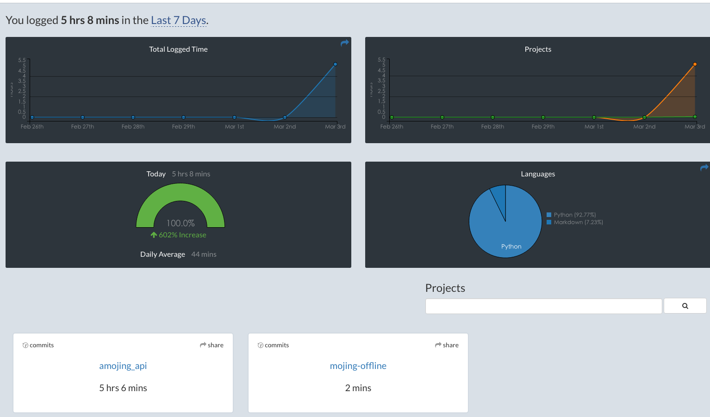

WakaTime
今天没啥好写的，记一个我刚刚发现的新东西吧。
WakaTime
网站宣传语是：Quantify your coding - Metrics, insights, and time tracking automatically generated from your programming activity
用来量化工作量，我用的PyCharm，只要安装官方提供的插件后，就能统计我当天为每个项目敲代码的时间，而且能统计我都谢了那些代码，比如JS占10%，Python占90%
看一眼我的Dashboard

具体有什么高端功能还没研究。